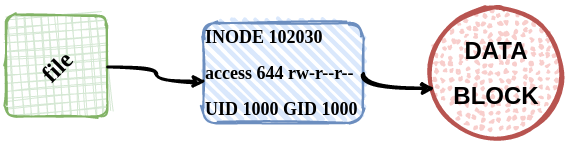
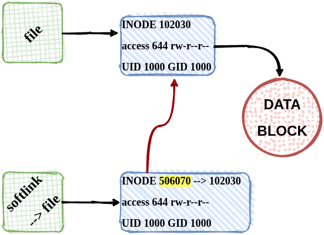
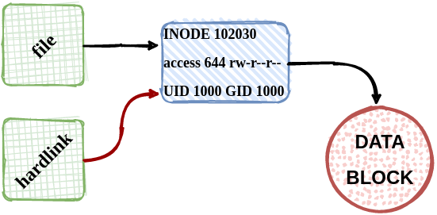
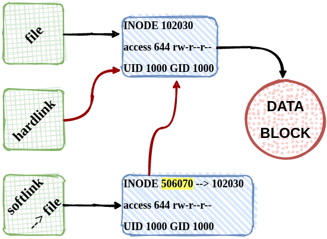

This is part of the #LinuxUpSkillChallenge. Don't forget to also check out the Official Instructions and the Reddit posts.
The inode (index node) is a data structure in a Unix-style file system that describes a file-system object such as a file or a directory. Each inode stores the attributes and disk block locations of the object’s data, such as the access mode (read, write, execute permissions), ownership, file type, file size, group, number of links, etc.
Each inode has an inode number, which is unique within a file system. The same inode number might appear in more than one file system. However, the file system ID and inode number combine to make a unique identifier, regardless of how many file systems are mounted on your Linux system.
The -i (inodes) option of the df command instructs it to display its output in numbers of inodes:
To see the inode number of a file, we can use ls with the -i (inode) option:
In its default usage, touch is the equivalent of creating or opening a file and saving it without any change to the file contents. Instead it simply updates the dates associated with the file or directory.
When you create a file in your file system, such as by issuing the following command:
The data for the actual file is stored in a data block. The permissions for the file, GroupID, OwnerID, size of file, and times relating to modification and access, is stored in the inode block.
Display that metadata information from the inode:
Symbolic links (or soft links) are similar to shortcuts in other operating systems. They are not the actual file, or data block, instead they are simply an inode that links to a data block of another file.
The new soft link you created will indicate which regular file is pointing to:
Note the inode number is different:
If you use stat on a file that is actually a symbolic link, it will report on the link. If you wanted stat to report on the file that the link points to, use the -L. Note the inode number is the same:
If the link is to be deleted, the original file remains intact. If the original file is deleted, the link will be hanging, pointing to nothing.
Hard links do not create a separate inode, that is they simply insert an entry into the directory file that points to the same inode of the file it is linked to.
The new hard link you created is indistinguishable from a regular file:
Note the inode number is the same:
If you delete the original file, the link will still contain the original file content, as that’s not removed until there is one hard link pointing to it.
An alias is a short cut command to a longer command. Users may type the alias name to run the longer command with less typing.
Without arguments, alias prints a list of defined aliases:
A new alias is defined by assigning a string with the command to a name.
For more detail on how I did each day, check out my log on Reddit. Follow me on Twitter for daily updates.